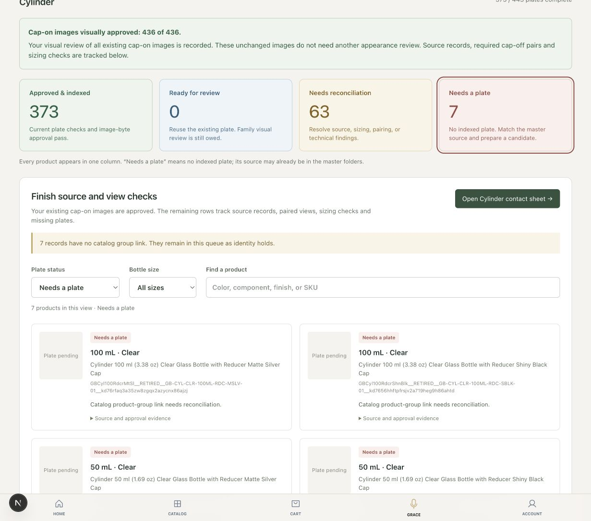
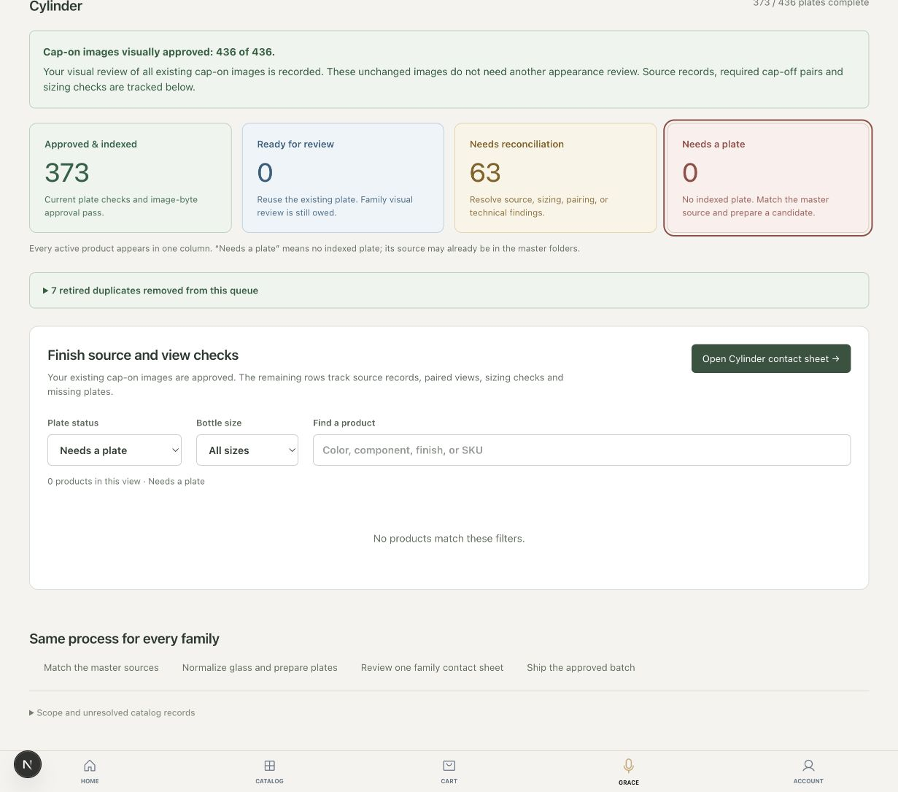

Cylinder changed from 443 to 436 active records. Missing plates changed from 7 to 0. The 373 completed plates, 63 technical holds and all 436 cap-on approvals are unchanged. The retired records remain in the duplicate register.
Both screenshots use the same 1,231 × 1,085 viewport and 100% zoom. Product images and approval history were not modified.
Open the updated Cylinder workbench →

